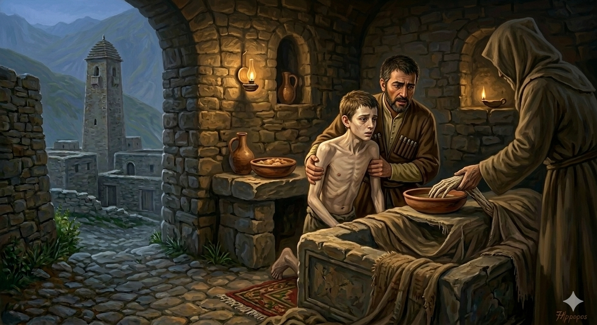

И.А. Дахкильгов. Хьехаме дувцарш - поучительные рассказы-притчи.
И.А. Дахкильгов. Хьехаме дувцарш - поучительные рассказы-притчи. Из ингушского фольклора.

Наьна кулг
Хьалхарча замах бахаш хиннабар нанеи воӀи. Дика бахар уж. Ха яьннача гӀолла нана кхелхай. Маьлхара каша дӀайилай из. Ха-зама йодаш, воӀ гӀеллуш хиннав. Ди денга мел ух, вӀашка ухаш, таӀаш хиннав. Ер ма йий, аьнна, сагото хиннаяц цун, дика мел дар даа долаш а хиннав. ХӀаьта а гӀеллуш хиннав. Цхьаккхача дарбано верзавеш хиннавац. Кхы дӀалела гӀоарал доацаш висав, Ӏочуюачох пайда хулаш хиннабац. ТӀеххьара цхьа хӀама ховш волча сагага хаьттад. Деррига шийна дӀадийцача, цо аьннад: - Нана кхелхача ханара денза гӀеллуш ва хьо. Нанас юаяьр дарбанна хиннай хьона. Наьна кулг кхийтта даахӀама диача, верзаргва хьо. Из мар кхы дарба дац хьона. ДӀацӀакхаьчача, зӀамигача саго шийна даахӀама дайтад. Кад бизза из даахӀама а ийца, маьлхара каша чу вахав из. Уллача ший наьна кулг цу када йистах хьокахадалийтад цо. ТӀаккха чу а ваха, из даахӀама дӀадиад. Цу хана денза тоавала ваьннав из зӀамига саг. Цо мел юар дегӀа овсара хулаш хиннай. Наьна кулг дарбана да. Из мел кхийта хӀама - дикагӀдар да.
РУССКИЙ
Рука матери
Когда-то жили мать и сын. Хорошо жили, но настало время, и мать померла. Тело ее положили в надземный склеп. Шло время, и почему-то сын начал худеть день ото дня все больше и больше. Каких-то особенных забот у него не было, еды было вдоволь и ел он неплохо, однако, худел все больше. Ни одно лекарство ему не помогало. Обессилел юноша и слег. Наконец, его ближние обратились за помощью к одному ведуну. Он про все расспросил и сказал: "Ты худеешь со дня смерти своей матери. Тебе впрок была лишь та пища, которую готовила она своими руками. Ты выздоровеешь, если поешь пищу, которой коснулась рука твоей матери. Другого средства нет". Для юноши приготовили еду, положили ее в чашу и понесли в склеп. Там приподняли высохшую руку его матери и ею коснулись края чаши с едою. Затем дома юноша ее принял. С того дня он стал поправляться и вскоре полностью выздоровел. Материнская рука целебная, до чего бы она не дотронулась.
ENGLISH
A Mother's Hand
Once upon a time, there was a mother and her son. They lived happily together, but sadly, the mother passed away one day. Her body was laid to rest in an above-ground crypt. Some time later, for no apparent reason, the son began to lose weight day by day. He had no particular worries; there was plenty of food, and he ate well. Yet he grew thinner and thinner. No medicine helped him. The young man grew weak and took to his bed. Finally, his relatives turned to a sorcerer for help. The sorcerer asked him all about it and said: 'You have been losing weight ever since your mother died. The only food that has sustained you is that which she prepared with her own hands. You will recover if you eat food that has been touched by your mother. There is no other remedy." They prepared a meal for the young man, placed it in a bowl, and carried it to the crypt. There, they lifted his mother's withered hand and touched the rim of the bowl with it. Then, back home, the young man ate the meal. From that day on, he began to recover and soon made a full recovery. A mother's touch has healing powers.
НОХЧИЙН
Ненан куьг
Хьалхарчу заманехь бехаш хиллера наний воӀӀий. Дика бехар уьш. Хан йаьллачухула нана кхелхина. Маьлхан коше дӀайоьллина иза. Хан-зама йодуш, воӀ гӀеллуш хилла. Де дийне мел дели, хебаш, таьӀаш хилла. ХӀара ма дай, аьлла, сагатдар хилла дац цуьнан, дика мел дерг даа долуш а хилла. ХӀета а гӀеллуш хилла. Цхьана а дарбано верзош хилла вац. Кхин дӀалела гӀора доцуш висна, дӀайуучух пайда хуьлуш хилла бац. ТӀаьххьара а цхьа хӀума хууш волучу стаге хаьттина. Дерриге шега дӀадийцича, цо аьлла: - Нана кхелхинчу хенара дуьйна гӀеллуш ву хьо. Нанас йаийнарг дарбанна хилла хьуна. Ненан куьг кхетта даахӀума диъча, воьрзур ву хьо. Иза бен кхин дарба дац хьуна. ДӀацӀакхаьчча, жимачу стага шена даахӀума дайтина. Кад буьззина и даахӀума а эцна, маьлхан кошан чу вахна иза. Ӏуьллучу шен ненан куьг цу кедан йистах хьакхадалийтина цо. ТӀаккха чу а вахна, и даахӀума дӀадиъна. Цу хенара дуьйна товала воьлла и жима стаг. Цо мел йуург дегӀан эвсара хуьлуш хилла. Ненан куьг дарбане ду. Иза мел кхетта хӀума - диках дерг ду.
ПОГОВОРКИ
Атта Ӏоадаь рузкъа михо дӀадихьад. - Легко нажитое добро ветер унес.Даьнеи наннеи доккхагӀа дола совгӀат да яхь йола воӀ кхийча, эхь долу йоӀ кхийча. - Самый большой подарок для родителей – гордый сын и скромная дочь.Зудала ваьнна воккха саг а, сов цӀимхара лела зӀамига саг а – шаккхе а чамаза ва. - Неприятны кокетливый старик и старчески серьезный юноша.ХьунагӀа дӀалелар дац аькха, аькха да хьунагӀара цӀаденар. - Не та добыча, что в лесу находится, а та, которую домой принесешь.Декхар доалла саг паргӀата хургвац, декхар дӀадаллалца. - Должник не знает покоя, пока долг не вернет.Жена юкъе ийккъача берзо устагӀа дика-во къестабац. - Нагрянув в овчарню, волку некогда разбираться в овцах.Йоархш лакх яр аьнна, баа сом хилац: модж йӀаьха яр аьнна, хьаькъал совнагӀа хилац. - Сорняк вырастает высоким, да плодов на нем не бывает; борода отрастает длинной, да ума она не прибавляет.Ка ца йоала тӀом беций барт ийгӀа дезал. - Семья без согласия, что поражение в бою.Кит юзае атта да, бӀарг бузабе хала да. - Легко наполнить живот, трудно насытить глаза.Кулгашца мух соцалургбац. - Руками ветер не остановишь.Кхело байнаб аьнна бӀарг са гуш хинаб. - Глаз, местным судом объявленный незрячим, оказался видящим.Кхуврчага санна нахагахьа гӀерта; бакъда, сов гарга гӀорте, воагавергва; сов гаьна хуле, шеллургва. - Тянись к людям, как к очагу, но помни; слишком близко – обожжежься, слишком далеко – застудишься.Къайле доттагӀчунга а ма ювца, - цун а хул кхыъ-кхе доттагӀа. - Свою тайну даже другу не открывай – и у него есть свой друг.Къонах дезал Ӏалашбе гӀерташ ара лел, сесаг цӀагӀа шийна тӀехьа дезал боаккхаш ягӀа. - Пока мужчина где-то ходит, чтобы обеспечить семью, жена дома детей к себе приваживает.Маьхах ца ийцар хозача къамаьлаца ийцад. - Не приобретенное за плату приобрели сладкими речами.МӀадаштеи колдаштеи юкъе уле а, дошо – дошо да. - Даже среди грязи и помоев золото остается золотом.Наьха кхуврча юхе вӀохвала веннар гӀорваьв. - Кто хотел греться у чужого очага, замерз.Наьхадар бӀаргашца дуъ, шийдар цергашца дуъ. - Чужое едят глазами, свое – зубами.Оапаш бувца саг коа вита мегаргвац. - Лжеца нельзя даже во двор пускать.“Сахьата болх ца бе кӀира наб ергъяр аз”, - яхад мекъачо. - Лентяй говаривал: “Чем работать один час, лучше спать всю неделю”.Ткъо шу даьннар берза тара хул – дӀаверзар, хьаверзар кадай долаш; шовзткъа шу даьннар – цӀокъа лома тара ва – денал долаш, тӀакхийтта шийна дезар хьадоаккхаш; кховзткъа шу даьннар чана тараверз – мекъвенна, вижара тӀера волаш. - Двадцатилетний похож на волка – шустрый, быстрый; сорокалетний похож на барса – мужественный, своего не упустит; шестидесятилетний похож на медведя – ленивый и склонный к спячке.Хи йисте ягӀача бечох а алар ийшадац. - Сплетничают даже про сваю, вбитую у реки.Эггар хозагӀа йолча йоӀах а “фоарт йӀаьха я цун” ала цаӀ кораваьв. - Нашелся хулитель который даже про самую красивую девушку сказал: “У нее шея длинная”.